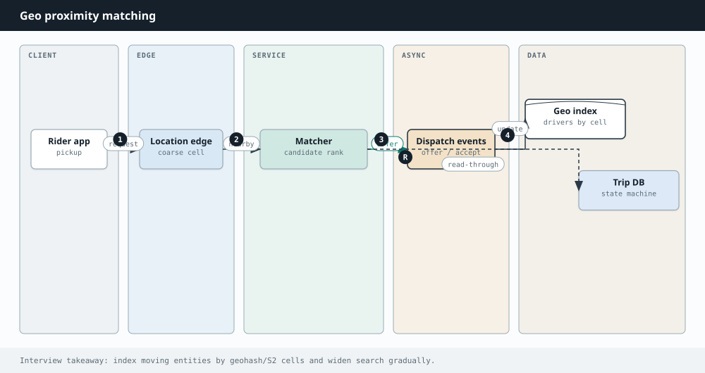

System Design
Chapter 34
Design: Uber

A ride hailing app is a real time matching problem laid over a map.
Thousands of drivers move around a city sending their location, and the moment a rider requests a ride, the system has to find a good nearby driver and connect the two within seconds.
Requirements
Track driver locations in real time, let a rider request a ride, match them to the best nearby available driver, and manage the trip from pickup to drop off and payment. The matching must be fast even with huge numbers of drivers moving at once.
Geo index Rider app nearby drivers locations candidates Location gateway realtime updates ride request Matching / dispatch Trip service Driver app Drivers stream location into a geospatial index. A request queries nearby cells and dispatches a driver.
The key decisions
The central idea is a geospatial index. You cannot scan every driver in the city for each request, so you divide the map into small cells using a scheme like a grid, geohash, or H3. Now "find drivers near this point" becomes a quick lookup of a handful of nearby cells instead of a full scan. Drivers push frequent location updates, and you keep only their latest position in a fast in memory store keyed by cell, since a position from ten seconds ago is worthless.
When a rider requests a ride, the matching service pulls the candidate drivers from the nearby cells and picks one by distance, estimated arrival time, and rating, then dispatches and holds that driver
so two riders never get the same one. Everything downstream, trip updates, pricing, and payment, flows through queues so the fast matching path is not blocked by slower work.
PROS CONS Cell based indexing turns a full scan into Cell size is a tuning problem, too big or a tiny lookup too small both hurt Keeping only the latest position in Dense areas create hot cells that need memory keeps it fast and small extra care Queues keep pricing and payments off Holding a driver during dispatch needs the time critical match path careful concurrency W H Y A G E O S P A T I A L I N D E X , N O T A D A T A B A S E Q U E R Y A plain database asking for every driver within two kilometers would scan and compute distances across the whole fleet on every request, which does not survive a busy city. By bucketing drivers into map cells and updating positions in memory, the system answers "who is near here" by reading a few cells. That single choice is what makes real time matching possible at scale.
Going Deeper
Geospatial indexing up close
The map is divided into cells using a scheme like a grid, a geohash, or Uber's H3 hexagons, and each driver's latest position is filed under its cell. To find drivers near a rider you look at the rider's cell and its immediate neighbors, a handful of cells, rather than scanning every driver in the city.
Cell size is the key tuning knob: too large and each cell holds too many drivers to sort through, too small and you have to check many cells for one query. Dense downtown areas can become hot cells that need extra care, such as finer subdivision.
R is the rider; blue dots are drivers filed by cell R look only at the rider's cell and its neighbors, not the whole city Drivers are filed by map cell, so finding nearby ones means checking a handful of cells instead of scanning everyone.
M A T C H I N G U N D E R C O N C U R R E N C Y
Once you have candidate drivers, two riders must not be handed the same one. The match has to atomically claim a driver, marking them busy the instant they are dispatched, so a second request sees them as taken. Without that lock you get double bookings, which is why dispatch holds a driver rather than merely suggesting one.
S T E P B Y S T E P
How a ride request finds a nearby driver in seconds.
Driver apps continuously stream their location into the geospatial index, bucketed by map 1 cell.
A rider requests a ride from their current location. 2 The matching service looks up the nearby cells and gathers the candidate drivers in them. 3 It picks the best one by distance, arrival time, and rating, then dispatches and holds that 4 driver.
The trip service tracks the ride to completion, with pricing and payment handled through 5 queues.
Interview drill — Ride sharing
Geo + matching + state machines — keep it regional.
More drills in the Interview Lab.
Q1. Design Uber
Q2. Avoid double dispatch
Two riders, one driver?
CAS driver status; offer lease with timeout; one claim wins.
Q3. ETA accuracy
How is ETA computed?
Map-match GPS; traffic-aware routing; cache segments.
Q4. Surge pricing
Surge without wild oscillation?
Per-cell imbalance; EMA smooth; cap change rate; show before confirm.
Q5. City sharding
How do you shard?
Most state is city-local; global only for identity/billing.